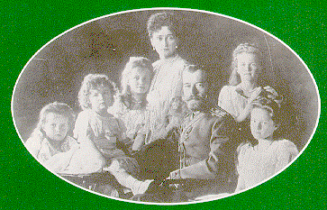
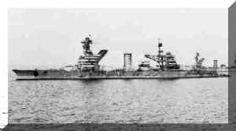

Russo- Japanese War:
For information on the conflict, click here
The invasion of Manchuria


For information on Japan, click on the map
Russian Revolution of 1905:
The October
Manifesto
Click here
for the Russian Revolution in Dates.